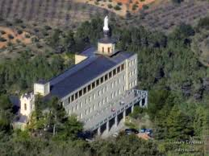
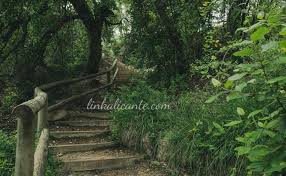
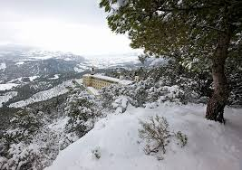
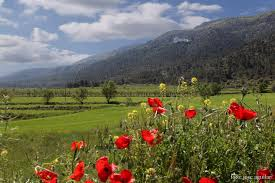

Bosque mediterráneo
El carrascal constituye uno de los elementos más característicos del parque. Junto a él aparecen otras especies adaptadas a diferentes zonas de umbría y solana.
El Parque Natural del Carrascal de la Font Roja es uno de los espacios naturales mejor conservados de la Comunitat Valenciana. Su paisaje, biodiversidad y red de senderos lo convierten en un enclave privilegiado para conocer la montaña mediterránea.
Situado entre los términos municipales de Alcoy e Ibi, este parque natural destaca por su valor ecológico, su paisaje de montaña y su importante papel en la conservación del bosque mediterráneo.
La Font Roja, también conocida como Carrascal de la Font Roja, es uno de los parques naturales más representativos del interior de Alicante. El parque se caracteriza por la presencia de carrascales bien conservados, barrancos, cumbres y zonas de umbría que permiten el desarrollo de una gran diversidad biológica.
Además de su interés natural, La Font Roja tiene un importante valor cultural y paisajístico. Es un lugar muy apreciado tanto por visitantes como por senderistas, fotógrafos y personas interesadas en disfrutar de un entorno natural cercano a la ciudad de Alcoy.

El parque alberga una notable variedad de especies vegetales y animales, gracias a su altitud, orientación y condiciones climáticas.
El carrascal constituye uno de los elementos más característicos del parque. Junto a él aparecen otras especies adaptadas a diferentes zonas de umbría y solana.
La Font Roja es hábitat de aves rapaces, pequeños mamíferos, reptiles e insectos que encuentran en este entorno un espacio idóneo para vivir y alimentarse.
Sus senderos y miradores permiten disfrutar de panorámicas del entorno y comprender mejor la riqueza geográfica de la sierra.
El parque ofrece distintos itinerarios para recorrerlo de forma tranquila y conocer algunos de sus lugares más destacados.
Itinerario ideal para una primera visita. Permite conocer el entorno del santuario y disfrutar de una aproximación accesible al paisaje del parque.
Una de las rutas más conocidas del parque. Desde la parte alta se obtienen excelentes vistas del relieve montañoso que rodea La Font Roja.
Un itinerario muy interesante para observar la vegetación y el contraste entre las zonas más húmedas y las áreas de mayor exposición solar.
Opción perfecta para descubrir el parque con calma, interpretando su flora, fauna y valores medioambientales de una manera sencilla.
Una pequeña selección de imágenes para mostrar la belleza del paisaje de La Font Roja y su riqueza natural.



La Font Roja es un destino ideal para disfrutar de la naturaleza cerca de Alcoy, pero conviene preparar la visita para aprovechar mejor la experiencia y respetar el entorno.
El acceso más habitual se realiza desde Alcoy por carretera. Antes de la visita conviene comprobar el estado del acceso y la disponibilidad de aparcamiento en periodos de gran afluencia.
La primavera y el otoño suelen ser momentos especialmente recomendables por la temperatura, la vegetación y la calidad paisajística del parque.
Es importante seguir los senderos señalizados, evitar ruidos innecesarios, no recoger flora ni fauna y dejar el espacio natural en las mismas condiciones en las que se encontró.
Antes de planificar la excursión conviene tener en cuenta algunas recomendaciones básicas para disfrutar del parque de forma responsable.
El acceso principal se realiza desde Alcoy. Conviene revisar previamente la ruta y el estado del acceso, especialmente en fechas de mayor afluencia.
Se recomienda usar calzado cómodo, agua, protección solar y ropa adecuada a la estación del año, especialmente si se van a realizar rutas largas.
Es importante respetar la señalización, no dejar residuos, evitar alterar la fauna y conservar el entorno natural en las mejores condiciones posibles.